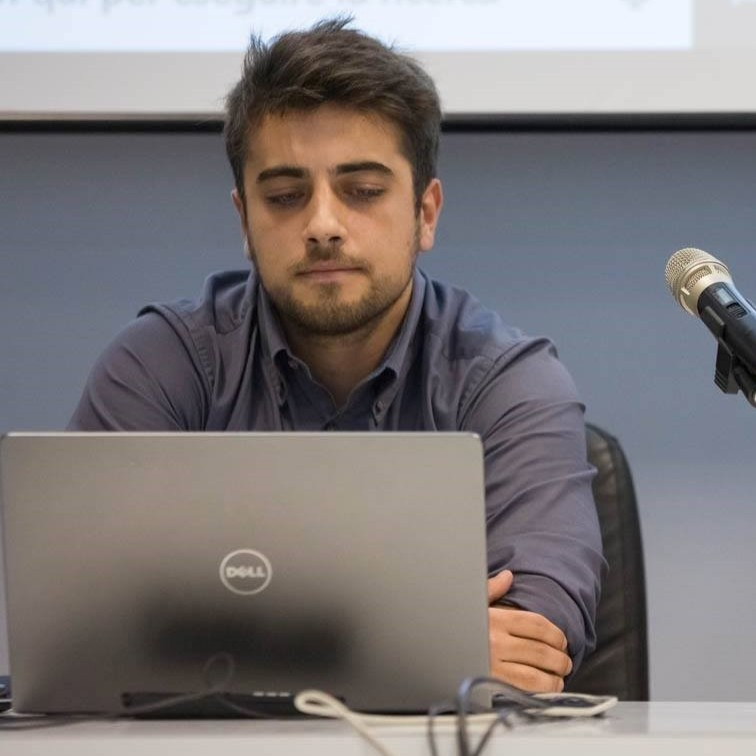

MAY — AUG 2017
Frontend Developer · Intern
Wellnet · Milan
Developed a graphical interface with JavaScript, React, and Electron; contributed to interface and user experience design.
~/ aleablu / curriculum vitae
Piedmont, Italy
CTO @ Inferendo
AI engineer and CTO at Inferendo. PhD in Computer Science from the University of Turin. My work focuses on recommender systems, multimodal learning, and visual search.
Currently CTO @ Inferendo / PhD, University of Turin
Work experience01 / CAREER
February 2026 — present
Building AI-powered product discovery at the company behind Visidea, with a focus on recommender systems and visual search for e-commerce.
My work spans model selection, training and validation, cloud infrastructure, production systems, database design, and application development.
Artificial Intelligence Engineer Sep 2021 — Jan 2026
Developed cloud computing solutions and ETL pipelines for large-scale data processing. Worked across AWS and Cloudera environments with Spark, Kafka, Flink, Python, and Java.
MAY — AUG 2017
Wellnet · Milan
Developed a graphical interface with JavaScript, React, and Electron; contributed to interface and user experience design.
JUL — SEP 2015
Santo Stefano Belbo’s Council
Maintained office servers and IT services, including software installation and account configuration.
TECHNICAL SKILLS · AI & DATA ENGINEERING
02 / QUALIFICATIONS
PhD
University of Turin
Industrial doctorate with Inferendo.
Completed December 2025.
MSc
University of Piemonte Orientale
Neural networks for urban air quality.
Completed July 2020.
BSc
University of Piemonte Orientale
Completed December 2017.
104/11003 / ACADEMIC EXPERIENCE
Research interests: recommender systems, multimodal deep learning, similarity search, and graph neural networks.
University of Turin × Inferendo. Research into visual search, multimodal retrieval, and domain-adaptive recommendation, connecting academic work with an e-commerce platform.
Thesis: From Visual Search to Semantic Recommendations: Visidea, a Comprehensive Recommender System Platform for E-commerce.
JOURNAL ARTICLE · APPLIED SCIENCES
Applied Sciences, 16(8), 3937
JOURNAL ARTICLE · KES
International Journal of Knowledge-Based and Intelligent Engineering Systems, 28(4), 765–779
CONFERENCE PAPER · FLAIRS-37
37th International Florida Artificial Intelligence Research Society Conference
BOOK CHAPTER · CAMBRIDGE UNIVERSITY PRESS
The Cambridge Handbook of AI and Consumer Law: Comparative Perspectives, pp. 9–18
DOCTORAL CONSORTIUM · AIxIA 2023
Short paper · AIxIA Doctoral Consortium, Rome · CEUR Workshop Proceedings
CONFERENCE PAPER · SISAP
Similarity Search and Applications · Springer, pp. 299–304
✳ Best PhD Symposium Paper AwardMLDM Workshop · AIxIA · Udine
Ital-IA · AI for Finance and Commerce workshop
MLDM Workshop · AIxIA · with L. Portinale and A. Giordana
Ital-IA · Rome
SISAP · Bologna
ESB: Encryption System over Broker · Pisa
CleanAir Project · L’Aquila
+ ADDITIONAL EXPERIENCE
Contributed to a word processor for Augmentative and Alternative Communication: frontend administration with React and Redux, and architecture migration to AWS.
A project that became my master’s thesis: combining mobile air-quality monitoring with recurrent neural networks to model pollution across a city.